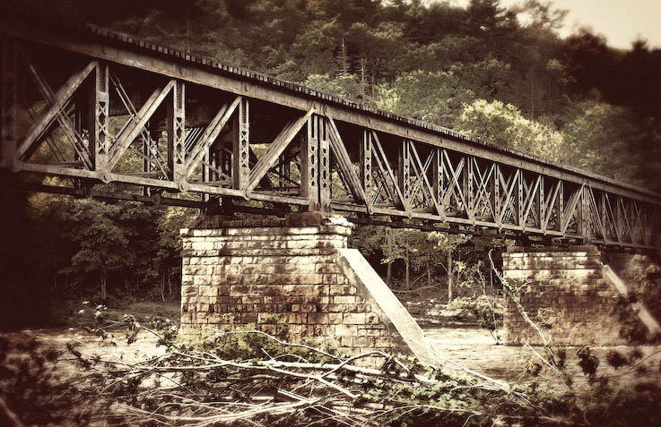
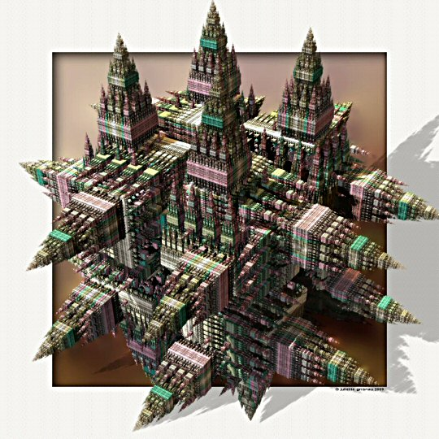
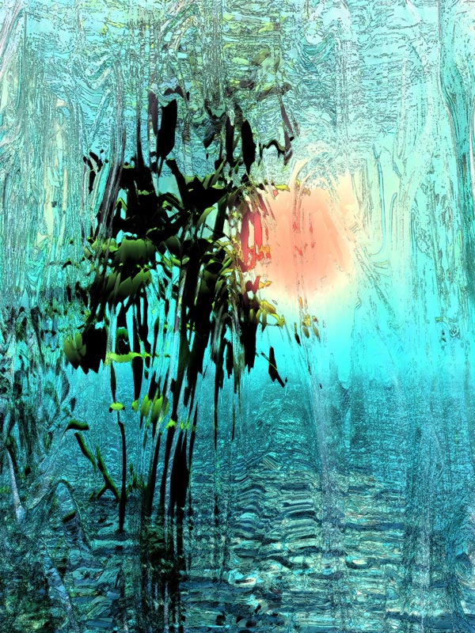
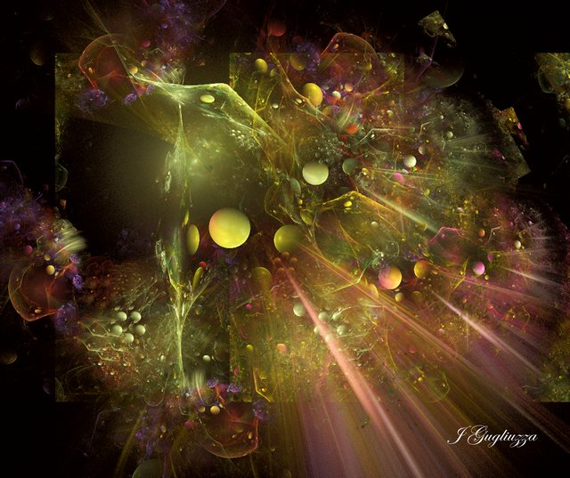
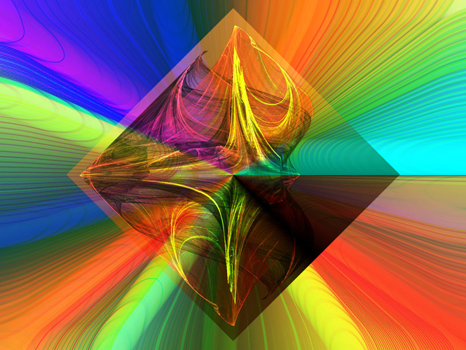
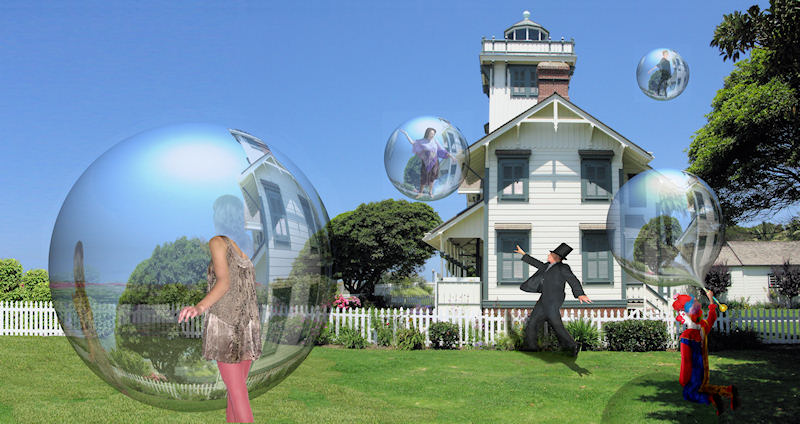

The Price of Life
by Vadim Gorodnitsky
05/01/2022
Click image to access artist's Autogallery 2010 exhibit

2bridge 
by Roger Gottlieb
05/02/2022
Click image to access artist's Autogallery 2010 exhibit
Sailing Home
by Kenneth Gould
05/03/2022
Click image to access artist's Autogallery 2010 exhibit

Sierpconstruction 
by Juliette Gribnau
05/04/2022
Click image to access artist's Autogallery 2010 exhibit
Aurora 
by Raya Grinberg
05/05/2022
Click image to access artist's Autogallery 2010 exhibit
Creation 
by Jean Gugliuzza
05/06/2022
Click image to access artist's Autogallery 2010 exhibit
Signal--Rainbow 
by Eva Gyorffy
05/07/2022
Click image to access artist's Autogallery 2010 exhibit
Shut Up at Night
by Werner Hornung and Pal Sarkozy (a collaboration)
05/08/2022
Click image to access artist's Autogallery 2010 exhibit

One 
by Robert Hustead
05/09/2022
Click image to access artist's Autogallery 2010 exhibit
The Window of Reality
by Yuri Kabisher
05/10/2022
Click image to access artist's Autogallery 2010 exhibit